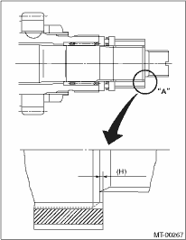
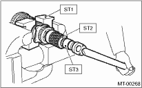
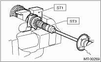
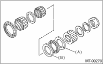

MANUAL TRANSMISSION AND DIFFERENTIAL(5MT) > Drive Pinion Shaft Assembly
1. Select adjusting washer No. 1 to adjust the dimension (H) to zero through a visual check. Position washer (18.3 × 30 × 4) and lock washer (18 × 30 × 2) and install lock nut (18 × 13.5).

2. Using the ST1, ST2 and ST3, tighten the lock nut to the specified torque.
| ST1 899884100 | HOLDER |
| ST2 498427100 | STOPPER |
| ST3 899988608 | SOCKET WRENCH (27) |
Tightening torque:
120 N·m (12.2 kgf-m, 88.5 ft-lb)

3. After removing the ST2, measure the starting torque using torque driver.
| ST1 899884100 | HOLDER |
| ST3 899988608 | SOCKET WRENCH (27) |
Starting torque:
0.3 — 0.8 N·m (0.03 — 0.08 kgf-m, 0.2 — 0.6 ft-lb)

4. If the starting torque is not within the specified limit, select new adjusting washer No. 1 and recheck starting torque.

|
(A) |
Adjusting washer No. 1 |
|
(B) |
Adjusting washer No. 2 |
|
Adjusting washer No. 1 | |
|
Part number |
Thickness mm (in) |
|
803025051 |
3.925 (0.1545) |
|
803025052 |
3.950 (0.1555) |
|
803025053 |
3.975 (0.1565) |
|
803025054 |
4.000 (0.1575) |
|
803025055 |
4.025 (0.1585) |
|
803025056 |
4.050 (0.1594) |
|
803025057 |
4.075 (0.1604) |
5. If specified starting torque range cannot be obtained, use a No. 1 adjusting washer and a suitable No. 2 adjusting washer which is selected from the following table. Repeat steps 1) through 4) to adjust starting torque.
|
(A) |
Adjusting washer No. 1 |
|
(B) |
Adjusting washer No. 2 |
|
Starting torque |
Dimension H |
Washer No. 2 |
|
Low |
Small |
Select thicker one. |
|
High |
Large |
Select thinner one. |
|
Adjusting washer No. 2 | |
|
Part number |
Thickness mm (in) |
|
803025059 |
3.850 (0.1516) |
|
803025054 |
4.000 (0.1575) |
|
803025058 |
4.150 (0.1634) |
6. Recheck that the starting torque is within the specified range, then crimp the lock nut at four positions.